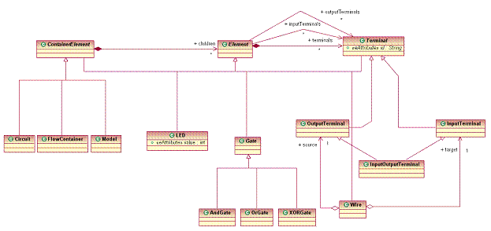
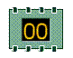
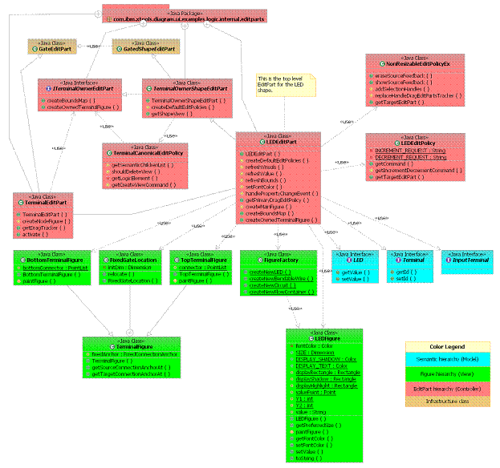

Tutorial: Creating a Shape
|
Version: 0.1 |
Date: July 13, 2005 |
Contents
· Overview
· Adding a new shape to the palette
· Creating a semantic model element for the shape
· Creating the notation element for the shape
· Creating the EditPart (controller) for the shape
· Displaying the shape on the diagram surface
· Summary
Overview
This tutorial provides the reader with the steps to create a new shape within a diagram client.
References
This tutorial references the following extension points:org.eclipse.gmf.runtime.diagram.ui.paletteProviders
org.eclipse.gmf.runtime.emf.type.core.elementTypes
org.eclipse.gmf.runtime.diagram.core.viewProviders
org.eclipse.gmf.runtime.diagram.core.editpartProvidersMore information about these extension points can be found in the SDK documentation.
Introduction
In this tutorial, we will use the Logic Diagram Example to illustrate how to create a shape that has semantic meaning and can be displayed on the diagram surface. To gain familiarity with the Logic Diagram Example, refer to the Logic Example Guide.
Adding a new shape to the palette
[back to top]
In order to create a new
shape in a diagram editor, then it is necessary to utilize the diagram
layer's service infrastructure that exposes some extension points that
clients need to provide extensions to. The
initial entry point for this extensibility is through the palette
service. The palette service
allows clients to add entries or drawers to an existing palette or
create one for their own editor. For
a detailed description of the service infrastructure, please refer to:
org.eclipse.gmf.runtime.doc.isv\html\tutorials\Service and Provider
Tutorial.html.
There are two main entry
points to be concerned about when adding a palette item. The first is the descriptor code
(plugin.xml) and then the provider code in java which the descriptor
code is registering. If we
examine the descriptor code, the example is registering an extension for
paletteProvider and then indicating the provider used is the
DefaultPaletteProvider that is available from the base plug-ins. This provides the palette with some
basic tools for selection, notes and text.
If this is not desired then a new palette provider would have to
be constructed. Next, the editor ID is necessary so that the palette can
be contributed for a particular editor.
Finally all the entries for defining the individual palette
entries and drawers can be defined and a reference to the PaletteFactory
which will construct the tools.
If we examine a particular
shape in the Logic example plug-in (LED), we can see what is necessary
to display that palette entry. The
drawer is defined separately as it's own
<entry> in the <contribution> section. The individual palette entry is
another <entry> that references the icons, text description and ID
that the factory will use to instantiate the tool.
</paletteProvider>
</contribution>
</entry>
id="LED">
small_icon="icons/ledicon16.gif"
path="/logicDrawer/"
kind="tool"
description="%LEDTool.Description"
large_icon="icons/ledicon24.gif"
<entry
label="%LEDTool.Label"
</entry>
</expand>
</content>
<!--
expand by default for LogicEditors -->
<content>
<expand>
id="logicDrawer">
small_icon="icons/comp.gif"
path="/"
description="%LogicDrawer.Description"
kind="drawer"
<entry
label="%LogicDrawer.Label"
<contribution
factoryClass="org.eclipse.gmf.examples.runtime.diagram.logic.internal.providers.LogicPaletteFactory">
<!-- class="org.eclipse.gmf.runtime.diagram.ui.parts.IDiagramWorkbenchPart"-->
</editor>
<editor
id="LogicEditor">
</Priority>
<Priority
name="Low">
<paletteProvider
class="org.eclipse.gmf.runtime.diagram.ui.providers.internal.DefaultPaletteProvider">
<extension
point="org.eclipse.gmf.runtime.diagram.ui.paletteProviders">
</extension>
Logic example palette:
Add new
shape tool instrumented from a palette factory class.
Once the descriptor code is instrumented, then the
next step is to create the palette factory that will create the
appropriate tool based on the ID defined in the plugin.xml <entry>
tag section. The palette factory
is specified via the 'factoryClass' tag in the paletteProviders
extension xml descriptor inside the 'contribution' for the palette
provider. The factory class is a
java class that extends PaletteFactory.Adapter and implements the
createTool method. If we consider
our example above, where we are trying to create the LED element, the
LogicPaletteFactory class demonstrates how to accomplish this. Given the semantic ID defined in the
'id' entry, i.e. 'LED', it will create a tool that
wraps that ID which is used later to decide which notation and semantic
elements to create when the tool is invoked. There are two main types of tools
clients need can incarnate to create shapes. The CreationTool class is used to
create shapes or nodes on the diagram surface or the
ConnectionCreationTool class which is used to create connections or edges
between shapes. In the case of
our example, the LED is a shape so we will use the CreationTool.
i.e. new
CreationTool(LogicSemanticType.LED)
These tools are fairly simple and no subclassing of these base tools
should be necessary. They merely
delegate creation to other services to create the notation and semantic
elements that the ID represents. This
creation is delegated through a request that is handled by the element
type infrastructure
Creating a semantic model element for the shape.
[back to top]Generally the purpose of a diagram editor is to allow a visual representation of some semantic data to allow it to be conveyed in a clear and intuitive manner to the user. The logic example is an editor that is representing the schematics of a circuit board or transistor. The model that represents that is separate from the notation that is displayed on the diagram. Consequently it is useful to define a semantic model if there was a need to code generate or 'burn' the logic onto a board. To accomplish this, we defined an ecore model and used EMF to code generate a meta-model.
Logic semantic model:

Once the semantic model is created, then there is the matter of how to
create and manipulate these elements in the context of the diagram
editor. The GMF common layer has
an extension-point for defining element types and helper classes that
allow for editing of these declared types called
'org.eclipse.gmf.runtime.emf.type.core.elementTypes'.
When a client provides an extension for this extension point,
they are declaring a set of elements that the editor supports and hooks
via these helper classes for editing these elements. The general mechanism is that the
tool sends a 'request' through the EditPart hierarchy. The SemanticEditPolicy picks up the
request and gets the appropriate IMetamodelType that is used to retrieve
the edit command.
Create the set of element
types in the plugin.xml that represent the different elements that can
be created in your editor. In the
case of the Logic editor:
<extension point="org.eclipse.gmf.runtime.emf.type.core.elementTypes">
<metamodel
nsURI="http://www.ibm.com/xtools/1.5.0/logicsemantic">
<metamodelType
id="org.eclipse.gmf.examples.runtime.diagram.logic.model"
eclass="Model"
edithelper="org.eclipse.gmf.examples.runtime.diagram.logic.internal.edithelpers.ContainerElementEditHelper">
</metamodelType>
<metamodelType
id="logic.led"
icon="icons/ledicon16.gif"
name="%LEDTool.Label"
eclass="LED"
edithelper="org.eclipse.gmf.examples.runtime.diagram.logic.internal.edithelpers.LEDEditHelper">
</metamodelType>
?
Create the corresponding EditHelper classes that are specified in the extension descriptor. Create the necessary commands that are returned by the EditHelper classes to edit and/or create the semantic elements described by the metamodelType descriptors. See ConfigureLogicElementCommand and CreateWireCommand.
Creating the notation element for the shape.
[back to top]After the semantic
element is created, then a notation representation of the semantic
element is needed in order to display on the diagram. The notation element is instantiated
from the notation meta-model which is a generic model for persisting
diagram artifacts. The notation
can be thought as the logic persistence for the 'boxes' and 'lines' that
make up the composition of the diagram elements. In general, the notation meta-model
stores position, layout information, color and font and any property
related to the display and/or editing of the diagram elements.
Similar to how a semantic
element is created, the tool will send a
request to the targeted EditPart (usually the one under the mouse). In order to respond to the tool
request we need to create a provider for creating the notation (View)
for the new shape. First it is
necessary to add plug-in.xml extension for the
org.eclipse.gmf.runtime.diagram.core.viewProviders extension point. We indicate the viewClass context
which indicates the type of View we want to create
(org.eclipse.gmf.runtime.notation.Node), and provide a hint for our provider to
be invoked upon ('LED').
Once the descriptor code
is complete, then we need to construct the java class which will
actually provide the factory. We
can create a new class LogicViewProvider which subclasses from
AbstractViewProvider. The purpose
of the provider class is to map the hint specified in the plugin.xml
with the view class that will construct the notation. This is done in the getNodeViewClass
method where it returns the view class that will set the styles that are
associated with the view and create contained views by default. The LEDView.java will serve this
purpose. The
LEDView subclasses from AbstractShapeView. Please refer to the
org.eclipse.gmf.examples.runtime.diagram.logic.internal.views.LEDView class
for details of what initialization is needed.
Example descriptor code for the LED shape:
<extension point="org.eclipse.gmf.runtime.diagram.core.viewProviders">
<viewProvider class="org.eclipse.gmf.examples.runtime.diagram.logic.internal.providers.LogicViewProvider">
<Priority name="Lowest">
</Priority>
<context viewClass="org.eclipse.gmf.runtime.notation.Diagram" semanticHints="">
</context>
<context viewClass="org.eclipse.gmf.runtime.notation.Node" semanticHints="LED">
</context>
</viewProvider>
</extension>
Creating the EditPart (controller) for the shape.
[back to top]Now that the notation can be constructed we need a controller (EditPart) that will synchronize the View with the drawing surface canvas for display (of IFigures). In order to respond to the tool request we need to create a provider for creating the controller (EditPart) for the new shape. This is a provider for the EditPartService. Similar to the viewProvider, it is necessary to add plug-in.xml extensions for the editpartProviders extension point. In the extension you specify the view class that the provider is being triggered on with an id and then provide that id as a context.
<extension
point="org.eclipse.gmf.runtime.diagram.ui.editpartProviders">
<editpartProvider class="org.eclipse.gmf.examples.runtime.diagram.logic.internal.providers.LogicEditPartProvider">
<Priority
name="Lowest">
</Priority>
<object class="org.eclipse.gmf.examples.runtime.diagram.logic.internal.views.LEDView"
id="LED">
</object>
<context
views="LED">
</context>
In the LogicEditPartProvider class there is simply a mapping from the
View class to the EditPart class that needs to be created in the
getNodeEditPartClass method. The
LEDEditPart class contains code for creating the IFigure that actually
renders the shape and synchronizing the semantic properties with this
IFigure. See LEDFigure for
details.
Displaying the shape on the diagram surface.
It can be a little confusing as to where the actually rendering of the shape takes place since there are 3 contributing hierarchies to the composition of a diagram (View / EditPart / IFigure). It's more clear when you consider explicitly the separation of responsibility of each hierarchy. The 3 hierarchies collaborate to make up a pattern called the Model-View-Controller pattern. The idea of this pattern is that
a Model can be maintained separately from the UI used to represent it to the user. In this case the 'View' hierarchy can be considered the model and is needed to persist and manage the diagram data. The 'EditPart' hierarchy is the controller that creates the corresponding IFigure and synchronizes it's attributes with the corresponding View object. Finally, the IFigure object is merely responsible for rendering (actual painting on the diagram) and reflecting constraints set by the EditPart hierarchy.
-
Create a new draw2d IFigure subclass that overrides the paintFigure routine to draw the figure as desired. (AndGateFigure)
-
In the EditPart created in #Create the controller (EditPart) for the shape. , override the createNodeFigure routine to return the new Figure you just created.
LED shape display:

Example: LED shape structure

Summary
In this tutorial, we did the following:
- Created a new palette entry for a shape.
- Created a semantic model element that the shape represents..
- Created a notation model element for the shape..
- Created an EditPart (controller) for the shape..
- Displayed the shape on the diagram surface..